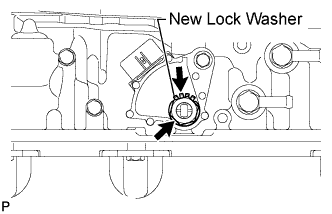

PARK / NEUTRAL POSITION SWITCH > INSTALLATION |
| 1. INSTALL PARK/NEUTRAL POSITION SWITCH ASSEMBLY |
Install the switch to the manual valve shaft.
 |
Temporarily install the bolt.
 |
Install a new lock washer and the nut.
 |
Temporarily install the control shaft lever RH.
 |
Turn the control shaft lever RH counterclockwise until it stops, and then turn it clockwise 2 notches to set it to the N position.
Remove the control shaft lever RH.
 |
Align the groove with the neutral basic line.
Hold the switch in the position described above and tighten the bolt.
 |
Using a screwdriver, bend the tabs of the lock washer.
Install the transmission control rod bush and collar to the transmission control shaft lever RH.
|
Install the transmission control shaft lever RH with the spring washer and nut.
Connect the switch connector.
| 2. CONNECT FLOOR SHIFT GEAR SHIFTING ROD SUB-ASSEMBLY |
 |
Connect the shifting rod to the transmission control shaft lever RH with the pin.
Install a new clip.
| 3. CONNECT CABLE TO NEGATIVE BATTERY TERMINAL |
| 4. INSPECT SHIFT LEVER POSITION |
When moving the shift lever from P to R with the engine switch on (IG) and the brake pedal depressed, make sure that it moves smoothly and correctly into position.
Check that the shift lever does not stop when moving the shift lever from R to P, and check that the shift lever does not stick when moving the shift lever from D to S.
Start the engine and make sure that the vehicle moves forward after moving the shift lever from N to D and moves rearward after moving the shift lever to R.
If the operation cannot be performed as specified, inspect the park/neutral position switch assembly and check the shift lever assembly installation condition.
| 5. INSPECT PARK/NEUTRAL POSITION SWITCH ASSEMBLY |
Inspect the switch (Click here).